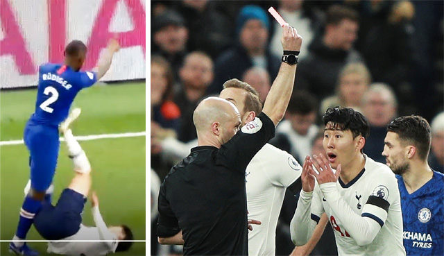

- 손흥민 퇴장
- 손흥민 올해 3번째 퇴장
- 손흥민 첼시전 퇴장 항소기각
후반 15분. 잉글랜드 프리미어리그(EPL) 토트넘이 첼시에 0-2로 끌려가던 상황.
선발 출전한 토트넘의 공격수 손흥민(27)은 볼 경합을 벌이다가 첼시의 수비수 안토니오 뤼디거(26)의 몸싸움에 밀려 넘어졌다.
이후 손흥민의 불필요한 동작이 발생했다.
그라운드에 등을 대고 누워 있는 상태에서 손흥민은 발을 쭉 뻗어 뤼디거의 가슴 부위를 찼다.
뤼디거는 고통스러운 표정으로 그라운드에 쓰러졌다.

비디오판독(VAR)을 거친 주심은 손흥민에게 레드카드를 꺼내며 퇴장을 명령했다.
손흥민의 행동을 고의적인 보복 행위로 본 것.
손흥민은 두 손으로 얼굴을 감싸 쥐고 그라운드에 무릎을 꿇으며 억울하다는 제스처를 취했지만 판정은 번복되지 않았다.